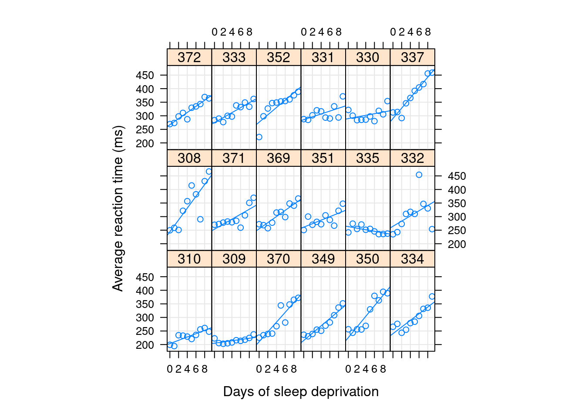

Fitting a mixed model: convergence and singularity
Author
Phillip M. Alday
Published
September 8, 2022
What does fitting a frequentist mixed model do?
Maximum Likelihood Estimation (MLE)
Likelihood: the probability of the data given the model
Given a model specification, find the values of the model parameters that maximizes the likelihood
Find the version of specified model that best matches observed data
You need to remember that “likelihood” is a technical term. The likelihood of \(H\), \(Pr(O\|H)\), and the posterior probability of \(H\), \(Pr(H\|O)\), are different quantities and they can have different values. The likelihood of \(H\) is the probability that \(H\) confers on \(O\), not the probability that \(O\) confers on \(H\). Suppose you hear a noise coming from the attic of your house. You consider the hypothesis that there are gremlins up there bowling. The likelihood of this hypothesis is very high, since if there are gremlins bowling in the attic, there probably will be noise. But surely you don’t think that the noise makes it very probable that there are gremlins up there bowling. In this example, \(Pr(O\|H)\) is high and \(Pr(H\|O)\) is low. The gremlin hypothesis has a high likelihood (in the technical sense) but a low probability.
Sober, E. (2008). Evidence and Evolution: the Logic Behind the Science. Cambridge University Press.
Some additional terminology
REML: Residualized Maximum Likelihood
Not actually the likelihood
Related to the \(n\) vs. \(n-1\) in e.g. calculating SDs
If your sample sizes are small enough that this matters, then your sample sizes are too small.
Deviance:
“\(-2 \log \text{Likelihood}\)”
(up to an additive constant, due to the difficulty in defining the fully saturated model required for the deviance)
so maximizing the likelihood is the same as minimizing the deviance
the difference in the deviance is the \(\chi^2\) value in the likelihood ratio test computed by anova() in R
differences on the log scale are the same as ratios on the original scale
the additive constant cancels out
Optimization
Once the REML/ML/deviance criterion is defined, we just need to find the value maximizes (REML,ML) / minimizes it (deviance).
It turns out that this problem only depends on the random effects and not on the fixed effects! (More precisely, for a given value of the random effects, we can directly compute the value of the fixed effects that maximizes the likelihood.)
This is called function optimization.
There are many techniques for this and many different implementations of each technique.
There are no free lunches and no optimizer which will always work the best.
This is why lme4 allows you to pick your optimizer and change its settings.
Changes in the default optimization settings are often the cause of new warnings when updating your lme4 version.
For more information, see:
?convergence
?lmerControl
One bit of fine print: for numerical reasons, everything is scaled relative to the residual variance during the fitting process (but this is hidden from the user).
An example
library("lme4")
Loading required package: Matrix
library("lattice")xyplot(Reaction ~ Days | Subject, sleepstudy, type =c("g","p","r"),index =function(x,y) coef(lm(y ~ x))[1],xlab ="Days of sleep deprivation",ylab ="Average reaction time (ms)", aspect ="xy")

Optimizing an intercept-only model
Let’s consider the intercept-only model, i.e. a model with only one variance component.
m <-lmer(Reaction ~1+ Days + (1|Subject), data=sleepstudy, REML=FALSE)summary(m)
Linear mixed model fit by maximum likelihood ['lmerMod']
Formula: Reaction ~ 1 + Days + (1 | Subject)
Data: sleepstudy
AIC BIC logLik deviance df.resid
1802.1 1814.9 -897.0 1794.1 176
Scaled residuals:
Min 1Q Median 3Q Max
-3.2347 -0.5544 0.0155 0.5257 4.2648
Random effects:
Groups Name Variance Std.Dev.
Subject (Intercept) 1296.9 36.01
Residual 954.5 30.90
Number of obs: 180, groups: Subject, 18
Fixed effects:
Estimate Std. Error t value
(Intercept) 251.4051 9.5062 26.45
Days 10.4673 0.8017 13.06
Correlation of Fixed Effects:
(Intr)
Days -0.380
Groups Name Std.Dev.
Subject (Intercept) 36.012
Residual 30.895
ff <-as.function(m)tvec <-seq(0,2,length=101)Lvec <-sapply(tvec,ff)par(bty="l",las=1)par(lwd=2, cex=2)par(mar=c(4,4,1,2))plot(tvec,Lvec,type="l",ylab="Deviance",xlab="scaled random effects standard deviation",ylim=c(1750,1901))points(theta,ff(theta),pch=16,col=1)
Optimizing a model with intercept, slope and correlation
m2 <-lmer(Reaction ~1+ Days + (1+ Days | Subject), data=sleepstudy, REML=FALSE)anova(m, m2)
Groups Name Std.Dev. Corr
Subject (Intercept) 23.7798
Days 5.7168 0.081
Residual 25.5919
Partial image for intercept with constant (optimal) slope and correlation.
#| echo: falsetheta2 <-getME(m2,"theta")ff2 <-function(x) as.function(m2)(c(x,theta2[2],theta2[3]))tvec2 <-seq(0,2,length=101)Lvec2 <-sapply(tvec2,ff2)par(bty="l",las=1)par(lwd=2, cex=2)par(mar=c(4,4,1,2))plot(tvec,Lvec,type="l",ylab="Deviance",xlab="scaled random effects standard deviation",ylim=c(1750,1901))points(theta,ff(theta),pch=16,col=1)lines(tvec2,Lvec2,col=4,lty=2,pch=6)points(theta2[1],as.function(m2)(theta2),pch=16,col=4)text(1.25, 1820, "Intercept only model")text(1.0, 1780, "Intercept and slope model", col=4)
Optimizing a model with intercept, slope and no correlation
m3 <-lmer(Reaction ~1+ Days + (1+ Days || Subject), data=sleepstudy, REML=FALSE)summary(m3)
Linear mixed model fit by maximum likelihood ['lmerMod']
Formula: Reaction ~ 1 + Days + ((1 | Subject) + (0 + Days | Subject))
Data: sleepstudy
AIC BIC logLik deviance df.resid
1762 1778 -876 1752 175
Scaled residuals:
Min 1Q Median 3Q Max
-3.9535 -0.4673 0.0239 0.4625 5.1883
Random effects:
Groups Name Variance Std.Dev.
Subject (Intercept) 584.27 24.172
Subject.1 Days 33.63 5.799
Residual 653.12 25.556
Number of obs: 180, groups: Subject, 18
Fixed effects:
Estimate Std. Error t value
(Intercept) 251.405 6.708 37.48
Days 10.467 1.519 6.89
Correlation of Fixed Effects:
(Intr)
Days -0.194
#| echo: falsetheta3 <-getME(m3,"theta")par(lwd=2, cex=2)par(mar=c(4,4,1,2))ff3 <-function(x,y) as.function(m3)(c(x,y))ff3v <-Vectorize(ff3)xx <-seq(0,2,length=51)Lvec3 <-outer(xx, xx, ff3v)contour(xx,xx,Lvec3, nlevels=20,xlab="Intercept",ylab="Days",main="Deviance by Scaled RE SD",labcex=1.5)points(theta3[1],theta3[2],pch=16,col=6)
And tends to deliver false positives with maximal models.
BUT PAY ATTENTION TO YOUR MODEL FIT AND YOUR OPTIMIZER’S OWN WARNINGS!!!
Note that warnings about convergence failure, e.g. a Hessian that is not positive definite, may still indicate genuine problems – or that you should at least consider rescaling, as the warnings tell you to do.
In MixedModels.jl, we only use the optimizer’s own checks and do not perform any post-hoc checks.
Optimization failures II
Successfully completed optimization may not be the global optimum, but only a local one.
#| echo: falsepar(lwd=2, cex=2)par(mar=c(4,4,1,2))sd.minqa <-getME(minqa,"theta")sd.nloptwrap <-getME(nloptwrap,"theta")ff <-as.function(minqa)tvec <-seq(0,20,length=101)Lvec <-sapply(tvec,ff)par(bty="l",las=1)plot(tvec,Lvec,type="l",ylab="Deviance",xlab="scaled random effects standard deviation",lwd =2)#abline(v=1,lty=2)points(sd.minqa,ff(sd.minqa),pch=16,col=2)points(sd.nloptwrap,ff(sd.nloptwrap),pch=16,col=1)legend(10,76,c("bobyqa","nloptwrap"),col=c(2,1),pch=16)
The problems with maximal models
Which n counts?
For a 2x2 within-subject design with “maximal” random slopes, we have 10 parameters!
4 standard deviations
1 intercept
2 main effects
1 interaction
6 correlations
(4 SDs * 3 other SDs) / 2 because order doesn’t matter
With typical 20-30 participant designs, we only have 20-30 levels of the grouping variable
So we only have 2-3 “samples” per parameter we’re trying to estimate – expect noisy estimates and overfitting!
For a 2x2x2 design, we have more parameters (34) than samples!
(The same math holds for item RE.)
It is not the total number of observations that matters for RE but rather the number of levels of the grouping variable!
Boundary fits
One of the innovations of lme4 compared to its predecessor nlme is its ability to fit models with optima at the boundaries, e.g. when a random effect goes to zero.
Note that this does not mean that there is no between participant/group variation, but rather that there is no variation not captured by the residual variation.
This lack of variation beyond the residual variation may just be due to lack of power to detect it!
Singularities
Nature doesn’t mind singularities, but they’re still terrifying
Numerically, boundary fits have non-invertible, i.e. singular matrices.
One or more of the REs being numerically zero is one possibility; however, not the only one.
If any linear combination of REs is zero, then this also yields a singular / boundary fit. For a geometric interpretation, think of a sloping ceiling – you may not be able to get to the edge of the floor nor the complete top of the building, but the combination of constraints leading to you hitting an edge.
Singular fits are not problematic per se – they are mathematically well-defined and it is possible that the singular fit is actually the best description of the data.
However, they are often indicative of overfitting, e.g. because you don’t have enough data to distinguish group variation from residual variation.
This overfitting, or equivalently, lack of power is a problem.
Singular fits are also slow to compute. So simplify your model or gather more data.
Maximal models, boundaries and gradients: a nasty interaction
#| echo: falselibrary("nlme")
Attaching package: 'nlme'
The following object is masked from 'package:lme4':
lmList